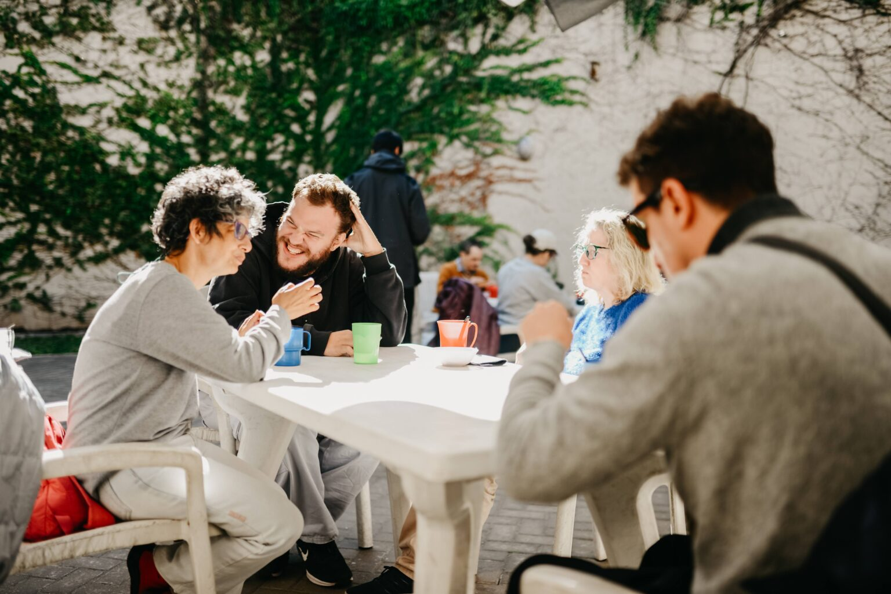
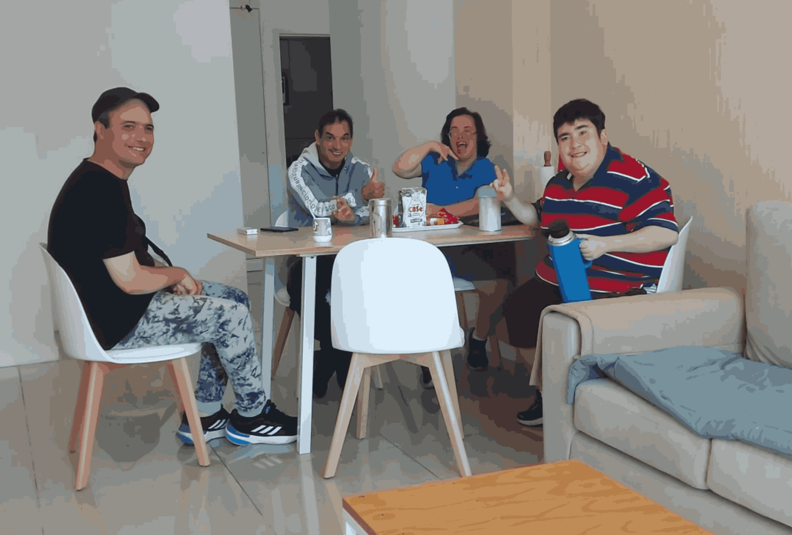
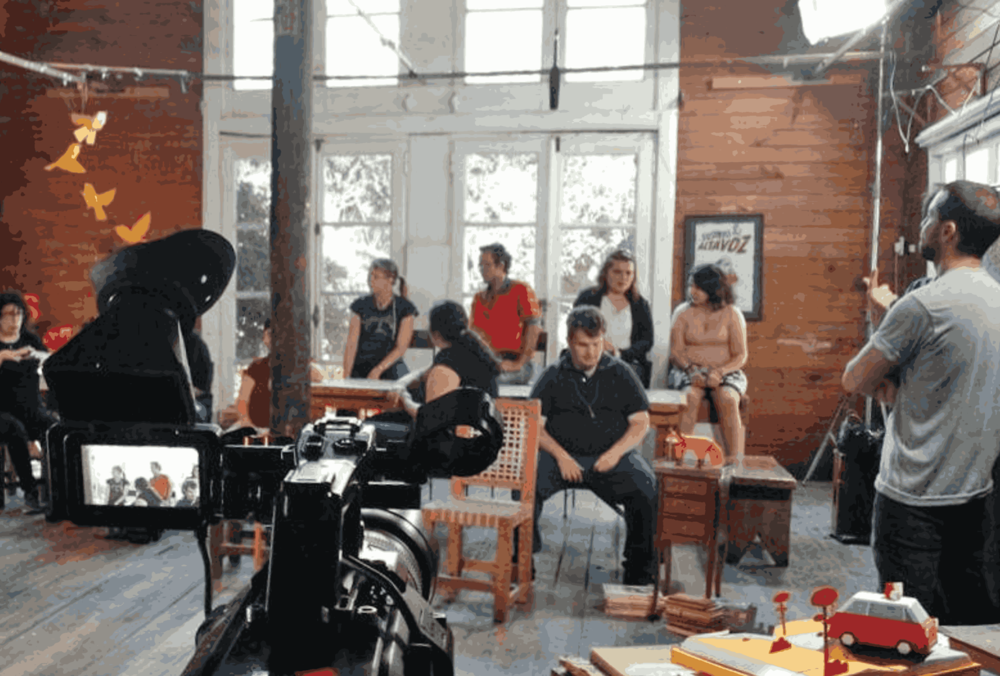

Centro de Día
Un espacio terapéutico donde realizamos talleres de arte, cocina, y estimulación para potenciar habilidades sociales.
Ver talleres
Desde 1989, trabajando para la inclusión de las personas con discapacidad intelectual
Conocer nuestra historiaEn Fundación Caminos creemos que la verdadera inclusión se construye día a día. Nuestro enfoque es integral, cálido y profesional, buscando siempre potenciar las capacidades y la autonomía de cada persona.

Un espacio terapéutico donde realizamos talleres de arte, cocina, y estimulación para potenciar habilidades sociales.
Ver talleres
Departamento propio para fomentar la autogestión, el manejo del dinero y la toma de decisiones fuera del hogar.
Conocer programa
Salidas recreativas y culturales. La inclusión real sucede habitando los espacios comunes de la ciudad.
Ver salidas"Un lugar en donde los jóvenes con capacidades diferentes, disfrutan cada taller. Infraestructura adecuada y lo más importante la calidez. ¡Excelentes valores!"
"Institución atendida por personal capacitado para que las personas alcancen los objetivos para la vida independiente."
"Excelente lugar. Muy amplio y confortable para los que participan en la fundación."
"EXCELENTES PROFESIONALES Y EL LUGAR ES HERMOSO ☺️"
"El mejor Centro de Día para jóvenes con discapacidad intelectual."
"En búsqueda de la autonomía, siempre."
"Un lugar en donde los jóvenes con capacidades diferentes, disfrutan cada taller. Infraestructura adecuada y lo más importante la calidez."
"Institución atendida por personal capacitado para que las personas alcancen los objetivos para la vida independiente."
"Excelente lugar. Muy amplio y confortable para los que participan en la fundación."
"EXCELENTES PROFESIONALES Y EL LUGAR ES HERMOSO ☺️"
A lo largo de nuestra trayectoria, diversas empresas han sido pilares fundamentales para nuestro crecimiento. Gracias a su compromiso, hemos logrado construir nuestra sede actual y equiparla con la mejor tecnología.


.png)


Si formás parte de una organización interesada en impulsar proyectos inclusivos y transformar realidades, te invitamos a ser parte de nuestra red.
Escribinos